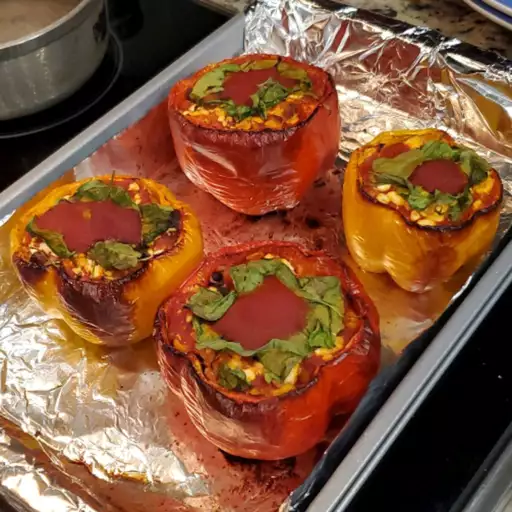

Info
-
Prep Time: 5 min
-
Cook Time: 85 min
-
Total Time: 90 min
-
Servings: 6
-
Yield: 6 stuffed peppers
Nutrition
-
Calories: 248
-
Fat: 9g
-
Carbs: 26g
-
Protein: 16g
Ingredients
-
1 cup cold water
-
½ cup uncooked long grain white rice
-
1 tablespoon vegetable oil
-
1 pound ground beef
-
6 medium green bell peppers
-
16 ounces tomato sauce, divided
-
1 tablespoon Worcestershire sauce
-
¼ teaspoon garlic powder
-
¼ teaspoon onion powder
-
salt and ground black pepper to taste
-
1 teaspoon Italian seasoning
Directions
- Preheat the oven to 350 degrees F (175 degrees C).
- Bring water and rice to a boil in a covered saucepan. Reduce heat to low and simmer until rice is tender, about
20 minutes.
- Meanwhile, heat oil in a skillet over medium heat. Add ground beef and cook until evenly browned and crumbly, 7
to 9 minutes.
-
Hollow out bell peppers by removing and discarding the tops, seeds, and membranes. Slice the bottoms of the
peppers if necessary to make sure they stand up straight.
- Arrange peppers in a baking dish with the hollowed sides facing upward.
-
Prepare filling by mixing cooked beef, cooked rice, 1/2 of the tomato sauce, Worcestershire sauce, garlic powder,
onion powder, salt, and pepper. Spoon an equal amount of filling into each hollowed pepper.
- Mix remaining tomato sauce and Italian seasoning in a bowl, and pour over the stuffed peppers.
- Bake in the preheated oven, basting with sauce every 15 minutes, until peppers are tender, about 1 hour.